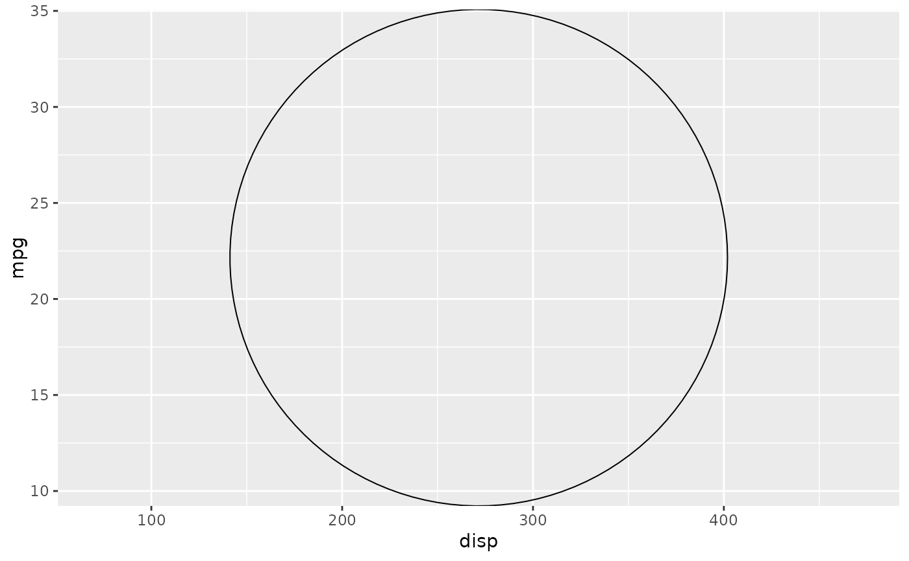
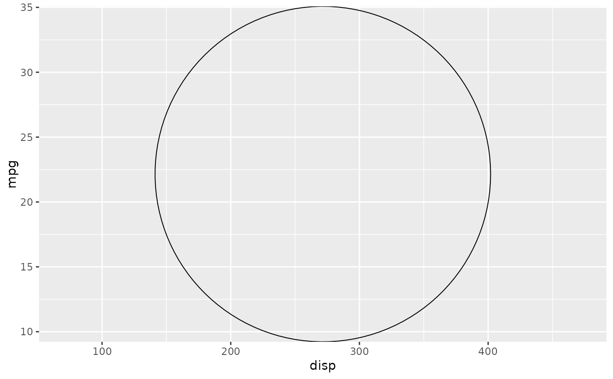

The make_constructor() functions sets up a user-facing constructor for
ggproto classes. Currently, make_constructor() is implemented for
Geom classes.
Arguments
- x
An object to setup a constructor for.
- ...
Name-value pairs to use as additional arguments in the constructor. For layers, these are passed on to
layer(params).- checks
A list of calls to be evaluated before construction of the object, such as one constructed with
exprs().- omit
A character vector of automatically retrieved argument names that should not be converted to user-facing arguments. Useful for internally computed variables.
- env
An environment to search for the object.
Examples
# For testing purposes, a geom that returns grobs
GeomTest <- ggproto(
"GeomTest", Geom,
draw_group = function(..., grob = grid::pointsGrob()) {
return(grob)
}
)
# Creating a constructor
geom_test <- make_constructor(GeomTest)
# Note that `grob` is automatically an argument to the function
names(formals(geom_test))
#> [1] "mapping" "data" "stat" "position"
#> [5] "..." "grob" "na.rm" "show.legend"
#> [9] "inherit.aes"
# Use in a plot
set.seed(1234)
p <- ggplot(mtcars, aes(disp, mpg))
p + geom_test()
 p + geom_test(grob = grid::circleGrob())

# The `checks` argument can be used to evaluate arbitrary expressions in
# the constructor before building the layer.
geom_path2 <- make_constructor(
GeomPath, checks = rlang::exprs(
match.arg(lineend, c("butt", "round", "square")),
match.arg(linejoin, c("round", "mitre", "bevel"))
)
)
# Note the inclusion of the expressions
print(geom_path2)
#> function (mapping = NULL, data = NULL, stat = "identity", position = "identity",
#> ..., arrow = NULL, arrow.fill = NULL, lineend = "butt", linejoin = "round",
#> linemitre = 10, na.rm = FALSE, show.legend = NA, inherit.aes = TRUE)
#> {
#> match.arg(lineend, c("butt", "round", "square"))
#> match.arg(linejoin, c("round", "mitre", "bevel"))
#> layer(mapping = mapping, data = data, geom = "path", stat = stat,
#> position = position, show.legend = show.legend, inherit.aes = inherit.aes,
#> params = list2(na.rm = na.rm, arrow = arrow, arrow.fill = arrow.fill,
#> lineend = lineend, linejoin = linejoin, linemitre = linemitre,
#> ...))
#> }
#> <environment: 0x56404293f268>
# Argument mismatch is detected
try(geom_path2(linejoin = "foo"))
#> Error in match.arg(linejoin, c("round", "mitre", "bevel")) :
#> 'arg' should be one of “round”, “mitre”, “bevel”
p + geom_test(grob = grid::circleGrob())

# The `checks` argument can be used to evaluate arbitrary expressions in
# the constructor before building the layer.
geom_path2 <- make_constructor(
GeomPath, checks = rlang::exprs(
match.arg(lineend, c("butt", "round", "square")),
match.arg(linejoin, c("round", "mitre", "bevel"))
)
)
# Note the inclusion of the expressions
print(geom_path2)
#> function (mapping = NULL, data = NULL, stat = "identity", position = "identity",
#> ..., arrow = NULL, arrow.fill = NULL, lineend = "butt", linejoin = "round",
#> linemitre = 10, na.rm = FALSE, show.legend = NA, inherit.aes = TRUE)
#> {
#> match.arg(lineend, c("butt", "round", "square"))
#> match.arg(linejoin, c("round", "mitre", "bevel"))
#> layer(mapping = mapping, data = data, geom = "path", stat = stat,
#> position = position, show.legend = show.legend, inherit.aes = inherit.aes,
#> params = list2(na.rm = na.rm, arrow = arrow, arrow.fill = arrow.fill,
#> lineend = lineend, linejoin = linejoin, linemitre = linemitre,
#> ...))
#> }
#> <environment: 0x56404293f268>
# Argument mismatch is detected
try(geom_path2(linejoin = "foo"))
#> Error in match.arg(linejoin, c("round", "mitre", "bevel")) :
#> 'arg' should be one of “round”, “mitre”, “bevel”